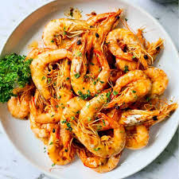

Garlic Shrimp

Description
Indulge in the exquisite simplicity of garlic shrimp - succulent prawns sautéed to perfection with minced garlic,
bathed in a symphony of olive oil, and adorned with a touch of butter and zesty lemon.
A burst of flavors that marries the sweetness of shrimp with the boldness of garlic,
creating a dish that's both elegant and irresistibly delicious.
Ingredients
- 1/4 cup of butter, divided
- 2 tablespoon chopped garlic
- 1 pound shrimp, peeled and deveined
- 1 tablespoon seafood seasoning (such as Old bay)
- 1 tablespoon chopped parsley, or to tase (optional)
- 1 lemon, cut into wedges, or as needed (optional)
Steps
- Heat 3 tablespoons butter in a cast iron skillet. Add garlic and cook until fragrant, about 30 seconds.
- Toss shrimp with seafood seasoning and place in the skillet. Cook shrimp until pink and opaque, 2 to 3 minutes on each side.
- Add 1 tablespoon butter and remove from heat. Garnish with chopped parsley and lemon wedges.